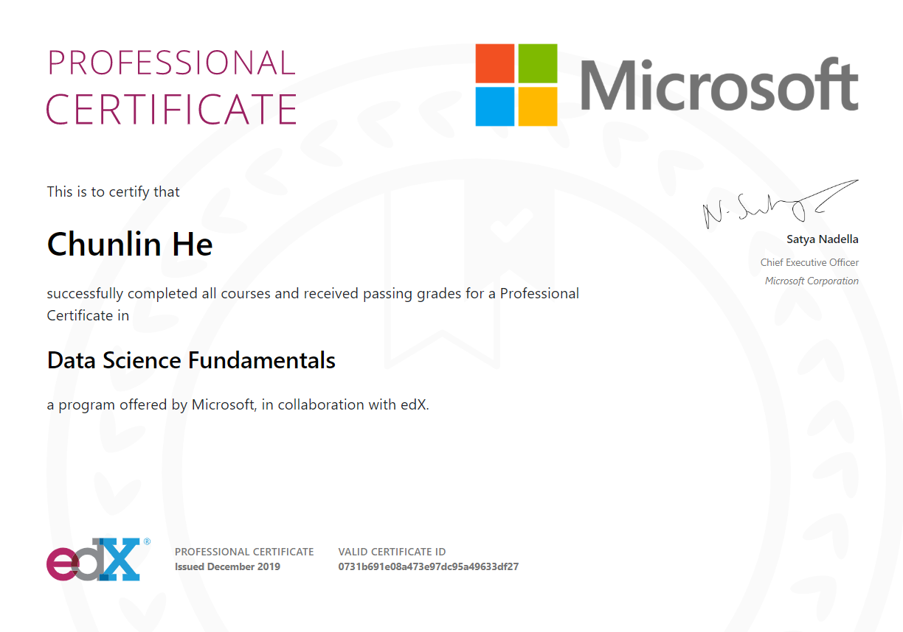

About the Author
(Data Scientist, Microsoft Certified)
Summary
- Managed databases, curated and analyzed diverse data for the multi-million dollar alfalfa toolbox project (ABT) to accelerate molecular breeding targeting an 8-billion dollar alfalfa market.
- Managed 100+ data projects in generating genotypic data for the 100+ academic and research institutions across 50+ developing countries.
- Strong experience and knowledge in data science projects with computing skills in Python, R, SQL, Bash, SAS, Minitab, MS SQL Server, MySQL, NoSQL (MongoDB), RDBMS, Jupyter Notebook, Google Colab, RStudio, AzureML, Power BI, Tableau, HTML5, CSS, and Big Data analytics using MS R Client, HDInsight, Spark.
- Experience and knowledge in Machine Learning (ML) and Deep Learning (DL) including Linear Regression, Logistic Regression, Random Forest, Decision Tree, Support Vector Machine, Gradient Boosting, AdaBoost, XGBoost, CatBoost, Neural Networks, computer vision, image analysis.
- Authored and co-authored 58 peer-reviewed and conference papers including book chapters.
- Other knowledge and interest: GBS, RNA-seq analysis, molecular genetics, genomics and bioinformatics.
Education
- Data Science Certificate (Certificate No: b5b3db2d-82dc-4aec-a623-37d86279b0b3): Microsoft Professional Program (MPP) for Data Science, Microsoft Corp, USA. (Individual Course Certificates are displayed in the right column. Many of the MPP alumni graduated from the program in about 18 months after taking and passing the examination for each of the 11 required courses including the Capstone Challenge Project.)
- Professional Certificate (Certificate No.: 0731b691e08a473e97dc95a49633df27) 
- Ph.D.: Plant Science involving Biostatistics, Quantitative Genetics, and Population Genetics, University of Saskatchewan, Saskatoon, Canada.
- M.S.: Biostatistics and Quantitative Genetics, Nanjing Agricultural University, Nanjing, China.
- B.S.: Agronomy/Crop Science, Hunan Agricultural University, Changsha, China.
{kind=link}
{kind=link}
Social/meetup groups
- SQLSaturday: Indianapolis, IN
- IndyPy: Indianapolis, IN
- IndyUseR Group: Indianapolis, IN
- Indy Azure User Group: Indianapolis, IN
- Power BI User Group: Indianapolis, IN
- Indy Big Data: Carmel, IN
Recent data science projects
- Kaggle deep learning project: global detection of wheat spikes/heads using computer vision and image analysis.
- Data merging and database management: data cleansing, merging from multiple sources, exploring data relationships, database update and management with a private company in healthcare industry.
- Kaggle machine learning project: completed the time series forecasting for the covid-19 pandemic in 2020 that was caused by the pneumonia-causing novel coronavirus (SARS-CoV-2), and created animated data visualization.
- MPP machine learning projects: (1) predicting using regression model on customer budget spending, (2) classifying item purchases with an accuracy of 85% - 100% with different algorithms.
- Microsoft Professional Capstone - Data Science: successfully accomplished an MPP Capstone Challenge for the machine learning project hosted by DrivenData in predicting the gross rents, nationalwide. Algorithms applied include (1) Linear Regression, (2) Random Forest, (3) AdaBoost, (4) Decision Tree. The R-squares of predictions from different data sets range from 0.8326 ~ 0.9697 and the RMSE from 0.0978 ~ 0.0421, respectively.
- MPP Capstone Challenge II: successfully predicted the mortgage rate spreads across 50 states from a data set with 21 independent variables using the following algorithms: (1) Linear Regression, (2) Random Forest and (3) XGBoost.
- Kaggle machine learning project: classifying the forest cover types using Python with an accuracy of 88.04% - 100% using the algorithms of (1) Logistic Regression, (2) Support Vector Machine (SVM), (3) Random Forest, (4) XGBClassifier.
- Clinic data analysis: accomplished sucessfully a statistical analysis using R for a set of clinic datasets collected from several thousand participants from a private research organization and generated valuable conclusions and insights.
- Relational database management project: executed successfully a RDBMS project from a private company using MS SQL server.
The early experience in programming for his Master’s degree
While pursuing his graduate studies for a Master’s Degree in Statistical and Quantitative Genetics at Nanjing Agricultural University, the author had the opportunity to take the programming courses, i.e. Fortran (formerly FORTRAN from “FORmula TRANslation”) and BASIC (“Beginner's All-purpose Symbolic Instruction Code”). Soon, he created genetic algorithm using the programming languages to develop quantitative genetic models for data analysis and prediction of various genetic parameters for the quantitatively inherited traits of soybean for his M.S. thesis project.
By the way, Fortran is a general-purpose programming language which is well suited to numeric computation & scientific computing. It was developed in the early 1950s by the team led by John W. Backus at IBM and later released in 1957. However, it's a compiled language compared with other interpreted languages such as Python and JavaScript. BASIC is a general-purpose and high-level programming language which was designed by John G. Kemeny and Thomas E. Kurtz at Dartmouth College in New Hampshire, USA in 1964.
Computer simulation for his PhD project
One of his earlier experience was the computer simulation of the distributions of the phenotypic data which were influenced by both genetic and environmental factors as part of the research proposal for his PhD project at the University of Saskatchewan. The phenotypic data, due to the genetic models and the modes of gene actions, depended predominantly on the number of genes as well as the environmental factors varied by the locations and years for the resistance to the common bunt disease of wheat using SAS and MINITAB packages. Referring to the genetic approach of Robert C. Elston, the initial intention was to explore the possibility of grouping or clustering the -derived progenies or families from the breeding populations to determine the number of genes controlling the disease resistance through the analysis of Mendelian inheritance, using simulated datasets based on the binomial distribution:
where p is the probability of common bunt disease for a wheat plant while q is the probability of being healthy for the plant (
Looking back the simulation with the concept of machine learning (unsupervised learning) in mind, the objective of the simulation was basically to draw inferences for classifying genotypic groups from the datasets simulated with the genetic models under different assumptions through the cluster analyses such as k-means, mixture models and hierarchical clustering.
With his background and interest, he is inspired by the following quote from Dr. Robert C. Elston, a distinguished statistical geneticist and professor at Case Western Reserve University since 1995, who was formerly a professor and head (1979-1995) in the Department of Biometry and Genetics at Louisiana State University Medical Center and a professor (prior to 1979) in the Department of Biostatistics at University of North Carolina:
"Statistical genetics may go out of fashion, but there will always be a need for statisticians who can compute." -- Robert C. Elston (2015)
(Zheng et al. 2015. A Conversation with Robert C. Elston. Statistical Science 30(2) : 258–267. DOI: 10.1214/14-STS497.)
His previous roles with diverse datasets
Database management and data analysis: Dr. He has worked as the Alfalfa Toolbox(ABT)/Data curator at Noble Research Institute, where he managed databases, curated and analyzed data for the multi-million dollar alfalfa toolbox project (ABT) to enhance molecular breeding targeting the 8-billion dollar alfalfa market. Some of his responsibilities in the ABT project related to the genomic, genetic and phenotypic datasets for the integration into the toolbox web portal to provide user-friendly access to the research community, for instance, to find the homologous/orthologous genes through sequence blasting against the reference genomes of the Cultivated Alfalfa at the Diploid Level (CADL) (Medicago sativa) and M. truncatula, the model legume species. The ABT aims to provide resources for molecular breeding with efficiency to increase genetic gain not only for the forage crop but for the beef industry, ultimately.
Managing 100+ data projects: Dr. He has also worked for the CGIAR Generation Challenge Programme (GCP), currently the Integrated Breeding Platform (IBP), c/o CIMMYT, which was mainly funded by the Bill & Melinda Gates Foundation (BMGF). Then, he managed more than 100 data projects to assist many research programs in generating genotypic data for molecular marker-assisted breeding of crop species to increase genetic gain for the 100+ academic and research institutions in 50+ developing countries across different continents. For instance, Dr. He, together with his colleagues, coordinated the development of many sets of SNP markers and advocated their applications to target important genes in the 11 key crop species, such as rice (Oryza spp.) and common bean (Phaseolus vulgaris). All sets of the KASP SNP markers were carefully selected including those from the important gene sequences of interest and developed across the genome of the relevant crop species. Many of them are associated with the economically important traits such as yield, quality, disease resistance and stress tolerance etc. He worked closely with the plant scientists to generate genomic, genetic and phenotypic datasets and conduct molecular breeding, some of his efforts are demonstrated through his introduction in the program interview (including the Chinese version). Also, as he has continued introducing the KASP assay through his publication for generating genotypic data, many research programs have adopted the cost-effective KASP assay into their own research laboratories.
About the Website
This website aims to host information on exploratory data analysis (EDA), data management, visualization, machine learning (ML) and prediction in order to provide possible solutions to real world problems using statistics and computer programming.
Contact the Author
If you have any questions, suggestions or would like to collaborate with data science projects, you may contact the author by email or by sending message and contact information below.